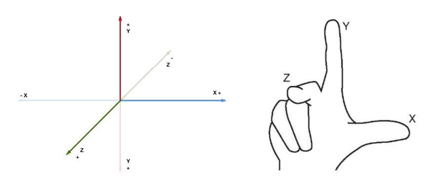

- Setting Position
- Be careful of element position. Don't set it out of view!
- -5 <= x <= 5
- -15 <= y <= 15
- z < 0
- The unit of measurement AFRAME uses is METERS.
- 1 Meter = 3 Feet (roughly)
- This should help you keep a consistent scale
- 3D Coordinate System
- This diagram demonstrates how we can determine the positive coordinates of the X, Y, and Z axis.
- Positive X is in the "right" direction
- Positive Y is in the "up" direction
- Positive Z is in your direction (ie pointed towards you, the viewer).

- We enter these values into the
position attribute inside the a-sphere tags
- example:
- < a-sphere position=".5 1 -5" radius="1" color="red"></a-sphere >
- The above code will create a red sphere positioned at x=.5, y=1, z=-5
- YOU MUST INCLUDE THE A-FRAME SCRIPT TO YOUR HTML
- This must be included inside the <script></script> tags inside the <head>
- <script>src="https://aframe.io/releases/0.5.0/aframe.min.js"</script>
- ALL CODE MUST BE LOCATED INSIDE THE
<a-scene> TAGS
- Use the <a-scene> tags in the <body> of the HTML document
- CREATING AND PLACING PRIMITIVE SHAPES
<a-scene>
<a-box position="-1 0.5 -3" rotation="0 45 0" color="#4CC3D9"></a-box>
<a-sphere position="0 1.25 -5" radius="1.25" color="#EF2D5E"></a-sphere>
<a-cylinder position="1 0.75 -3" radius="0.5" height="1.5" color="#FFC65D"></a-cylinder>
<a-plane position="0 0 -4" rotation="-90 0 0" width="4" height="4" color="#7BC8A4"></a-plane>
<a-sky color="#ECECEC"></a-sky>
</a-scene>
- HOW TO ADD YOUR OWN MODELS TO AFRAME
- We need to visit TinkerCAD.com
- This is an easy-to-use tool to create and download your own 3D models
- First, you will need to sign up/register
- If you don't have an email address to use for the sign-up process, let me know and we'll find a solution.
- Let's create a model!
- REMEMBER TO EXPORT YOUR MODEL AS A OBJ
- We need to upload your custom 3D model to CODEHS to use in your AFRAME projects
- To the right of the RUN CODE button is the MORE button. Click that button.
- Click UPLOAD button
- Click UPLOAD FILE
- Copy the URL inside of the File URL box
- You will paste that URL in your AFRAME project
- Now that we have our file uploaded somewhere, we can add our 3D model to our AFRAME project.
- At minimum, we need to include two lines of HTML to get our model placed.
- First line - Creating the entity
<a-asset-item id="cityModel" src="https://codehs.com/uploads/bb20df4d6c96916a94c56a50a0127fb1">
- Enter the file URL in the
src="" component
- Remember to set a unique
id
- Second Line - Placing the entity
<a-entity obj-model="obj: #cityModel" position="0 0 0" rotation="-90 0 0" scale="0.01 0.01 0.01">
- Enter the
id you made for the model
- In this case it is
#cityModel
- Be aware of the position, scaling, and rotation of your model
- Most likely it will have to be modified
You should now have a model in your AFRAME project!